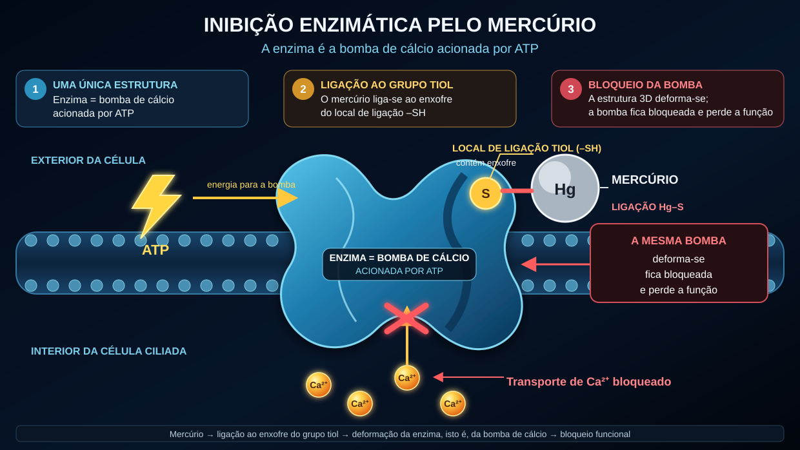

Acufenos causados por medicamentos e substâncias tóxicas (ototoxicidade)
Última atualização: junho de 2026
Também eu fui, naquela altura, afetado por acufenos extremos e infernais. No meu caso, tratava-se dos clássicos acufenos causados única e exclusivamente pelo ruído (e não de um episódio agudo relacionado com medicamentos), mas aquele som constante dos acufenos era exatamente o mesmo ataque permanente aos meus nervos, ao meu sono e a toda a minha vida. Também a mim os médicos disseram muitas vezes que tinha simplesmente de aprender a viver com aquilo.
Escrevo este artigo sobre os fatores desencadeantes químicos porque este tema desempenhou um papel importante na minha própria pesquisa. Desde 2012 que me tenho dedicado intensamente à bioquímica celular — e também às áreas da toxicologia e da medicina ambiental. E é precisamente aqui que o círculo se fecha: na prática dos médicos de medicina ambiental (como, por exemplo, o Dr. Klinghardt ou o Dr. Mutter), observa-se frequentemente um fenómeno fascinante. Quando, em pacientes com acufenos, uma carga oculta de substâncias tóxicas ou metais pesados constitui um fator determinante, uma desintoxicação celular direcionada pode muitas vezes levar a um alívio claro ou percetível dos ruídos nos ouvidos. O que aqui partilho é o meu próprio entendimento resultante desta pesquisa — e a base para as abordagens à solução que, mais adiante, trataremos neste website com base nestas pesquisas.
O ataque químico a partir de dentro
Quando pensamos em acufenos, temos quase sempre de imediato duas imagens na cabeça: o concerto ensurdecedor (ruído) ou o stresse intenso, ou o stresse traumático interior (psicossomática). Existe, porém, um terceiro fator desencadeante que não é mecânico nem emocional, mas puramente químico: os acufenos causados por medicamentos e substâncias tóxicas. Segundo a minha perspetiva, este tipo de acufenos é, de facto, um dos menos frequentes — mas, por uma questão de exaustividade, também quero expor a minha visão sobre este terceiro fator desencadeante. Na linguagem técnica, chama-se ototoxicidade (traduzido: «toxicidade para o ouvido»).
À primeira vista, isto talvez pareça abstrato, mas o nosso ouvido interno é extremamente sensível a determinadas substâncias químicas. Alguns medicamentos ou algumas substâncias tóxicas presentes no ambiente podem chegar diretamente ao ouvido interno através da corrente sanguínea e aí irritar ou até danificar as sensíveis células ciliadas ou o nervo auditivo.
O mecanismo: como a química gera sons
Recordemo-nos do canal iónico na ponta dos cílios, que, depois de uma sobrecarga, fica permanentemente demasiado aberto e deixa de fechar corretamente — tal como já foi explicado na minha subpágina sobre os acufenos causados pelo ruído. Num trauma acústico, a força mecânica das ondas sonoras altera a posição geométrica dos delicados cílios sensoriais.
Nos acufenos causados por medicamentos e substâncias tóxicas, acontece muitas vezes algo muito semelhante no fim, mas o caminho até lá é diferente. No fundo, é preciso imaginar cada célula ciliada do ouvido como uma pequena bateria biológica. Ela mantém um equilíbrio extremamente delicado de energia (ATP), minerais e tensão elétrica.
As substâncias tóxicas presentes no ambiente ou as doses tóxicas de medicamentos podem perturbar este delicado equilíbrio, ao prejudicarem maciçamente o funcionamento das centrais energéticas das células — tecnicamente chamadas mitocôndrias. Segundo o meu entendimento da bioquímica, acontece então o seguinte ao nível celular:
Como as mitocôndrias são indispensáveis ao fornecimento de energia à célula, o nível energético da célula — ou seja, o seu nível de ATP — diminui em consequência disso. Assim, as minúsculas bombas da parede celular, que consomem continuamente ATP — isto é, energia celular — para trabalhar, pura e simplesmente deixam de conseguir funcionar com rapidez suficiente para manter o equilíbrio químico. Em consequência, o cálcio acumula-se no interior da célula. Como, na biologia, o cálcio é o desencadeante direto da transmissão do estímulo, este excesso de iões obriga a célula a disparar permanente e descontroladamente «sinais anómalos». Para mim, isto não é um acaso místico, mas um automatismo bioquímico lógico. O cérebro perceciona este fogo elétrico contínuo como um ruído.
O som exato que ouves — seja um apito agudo, um chiado ou um zumbido grave — depende, na maioria dos casos, pura e simplesmente do ponto exato da cóclea (caracol auditivo) em que se encontram as células ciliadas afetadas. Nesse momento, o ouvido geralmente não é destruído fisicamente, mas a sua delicada ordem interna fica descompassada.
Os curtos-circuitos elétricos (o nervo auditivo)
Não são apenas as células ciliadas que estão em perigo, mas também o próprio «cabo elétrico» — o nervo auditivo. Este nervo está rodeado por uma bainha protetora, a mielina. Esta camada isolante é extremamente rica em gorduras e minerais e, por isso, reage de forma particularmente sensível às substâncias tóxicas que circulam no sangue. Se esta bainha for enfraquecida ou «adelgaçada» pelo stresse químico, o nervo deixa de transmitir os sinais de forma limpa. Surgem verdadeiros «curtos-circuitos» elétricos.
E é aqui que se revela a lógica pura da nossa anatomia: o nosso nervo auditivo não é um simples fio isolado, mas um feixe espesso composto por milhares de minúsculas fibras nervosas. Cada uma destas fibras é responsável pela transmissão de uma altura tonal muito específica. Se o curto-circuito tóxico (a degradação da mielina) surgir precisamente na fibra nervosa responsável pelas frequências altas, o teu cérebro regista, logicamente, um apito agudo. Se for afetada uma fibra responsável pelos sons graves, ouves um zumbido grave. Assim, o ruído, chiado ou apito que percecionas não é absolutamente fruto do acaso — depende em grande medida do minúsculo ponto do cabo principal em que o isolamento foi danificado.
A lei universal dos acufenos
Quando se juntam todas estas peças do puzzle, emerge um denominador central: segundo a minha mais profunda convicção e experiência, os acufenos são, em última análise, o resultado de nervos que processam a audição cronicamente irritados e hiperexcitados. Do ponto de vista físico, é quase indiferente onde cai exatamente o tiro de partida para esta hiperexcitação:
- Se as células ciliadas (devido ao ruído ou a medicamentos) ficam presas em modo de emergência e inundam permanentemente o nervo auditivo com glutamato…
- Se as substâncias tóxicas presentes no ambiente e os metais pesados atacam o isolamento (mielina) dos nervos e aí provocam curtos-circuitos diretos…
- Ou se um stresse psicossomático intenso e crónico se acumula no cérebro e mantém os centros de processamento auditivo sob corrente contínua, por assim dizer, «de cima para baixo»…
Quando se compreende esta lógica universal, os acufenos perdem muitas vezes por completo o seu caráter misterioso e aterrador.
Segundo a minha experiência, o resultado final é quase sempre exatamente o mesmo: o sistema nervoso nesta zona está cronicamente irritado e transmite um fogo elétrico contínuo de SOS. Quando se compreende esta lógica universal, os acufenos perdem muitas vezes por completo o seu caráter misterioso e aterrador — e o caminho para a solução torna-se subitamente cristalino.
Fatores desencadeantes típicos (substâncias ototóxicas)
Mas pronto, adiante: há toda uma série de substâncias conhecidas pelo seu potencial efeito ototóxico. (Importante: esta não é uma lista médica para autodiagnóstico; destina-se apenas à compreensão geral!)
1. Medicamentos
Alguns preparados podem sobrestimular o ouvido interno. Mas não basta conhecer apenas os seus nomes — é preciso compreender porque fazem o sistema descarrilar. Só quando compreendemos a mecânica do dano é que a nossa abordagem posterior (energia celular e desintoxicação) faz sequer sentido. Entre os grupos mais conhecidos encontram-se:
Analgésicos em doses elevadas (sobretudo aspirina/AAS)
Antes de mais, uma nota tranquilizadora: regra geral, um comprimido normal para a dor de cabeça não causa acufenos. Segundo a investigação, existe aqui frequentemente um paradoxo rigoroso da dose. Na maioria dos casos, só se torna perigoso perante verdadeiras doses tóxicas elevadas (muitas vezes vários gramas por dia). Quando isso acontece, modelos farmacológicos sugerem que o medicamento desencadeia uma reação em cadeia de três etapas no ouvido interno:
- O motor engasga-se: Parte-se do princípio de que a substância ativa bloqueia a prestina, uma minúscula proteína que funciona como um motor nas células ciliadas externas. Com isso, o amplificador acústico do ouvido colapsa. Como reação de pânico, o cérebro coloca muitas vezes no máximo o seu «controlo de volume» central (Central Gain), para ainda conseguir ouvir alguma coisa.
- A hipersensibilidade dos nervos: Ao mesmo tempo, modelos sugerem que o medicamento coloca os recetores do nervo auditivo num estado de excitabilidade elevada. O limiar de estimulação baixa, fazendo com que o sistema nervoso reaja de forma claramente mais sensível até aos sinais mais pequenos.
- O corte de energia (a ignição): Segundo a investigação bioquímica, a aspirina atua, em doses elevadas, como um «desacoplador» nas mitocôndrias. É como se retirasse simbolicamente a ficha da tomada à célula (falta de ATP). E é precisamente aqui que reside a diferença fascinante e lógica em relação ao trauma acústico: com o ruído, os delicados cílios da célula são literalmente dobrados pela força mecânica. Assim, o canal de cálcio fica permanentemente aberto, como uma porta emperrada, e o cálcio entra sem controlo. Na sobredosagem de aspirina, isso não acontece. Os cílios permanecem totalmente intactos no seu lugar. Aqui, é «apenas» a química que perdeu o equilíbrio. Não entra mais cálcio do que o habitual — mas, devido à rápida queda de energia, as minúsculas bombas de cálcio da célula simplesmente deixam de conseguir expulsá-lo com rapidez suficiente. Nesse momento, a célula fica pura e simplesmente totalmente sobrecarregada pela quantidade normal de cálcio. No fim, o resultado é o mesmo: o cálcio acumula-se no interior e obriga a célula a libertar sem interrupção o neurotransmissor glutamato.
O possível resultado em termos de acufenos: esta torrente descontrolada de glutamato atinge nervos cujo limiar de estimulação já foi reduzido (etapa 2) e é enviada para um cérebro cujo controlo de volume está no máximo (etapa 1). Surge um fogo contínuo ensurdecedor. E é precisamente esta lógica celular simples que explica também um fenómeno quotidiano para o qual até muitos médicos não têm frequentemente uma resposta conclusiva: porque é que o tio que tomou uma sobredosagem maciça de aspirina durante uma semana volta muitas vezes a ter sossego no ouvido pouco tempo depois de a suspender — enquanto o sobrinho de 26 anos, que só foi duas vezes a uma discoteca barulhenta, sofre há quatro meses de acufenos que simplesmente não desaparecem? Para mim, a resposta é absolutamente clara: no caso do tio, houve um corte de energia bioquímico, associado a uma hipersensibilidade do nervo auditivo. Assim que o medicamento é suspenso em articulação com o médico e eliminado pelo organismo, as centrais energéticas das células podem voltar a funcionar no seu modo fisiológico normal. Deste modo, as bombas voltam a receber a energia necessária, para poderem remover o cálcio em excesso e permitir que o sistema volte a funcionar sem falhas. No caso do sobrinho que foi à discoteca, pelo contrário, houve um impacto mecânico bruto. Segundo a minha pesquisa e o meu entendimento, os seus delicados cílios encontram-se depois numa posição geométrica alterada: alguns estão mais inclinados, outros menos. Por isso, os canais iónicos permanecem de forma duradoura mais abertos, fazendo com que, mesmo com um fornecimento de energia inalterado, entre na célula mais cálcio do que seria fisiologicamente previsto. É como se se tivesse dobrado à força a dobradiça de uma porta. E isso, logicamente, não se repara sozinho durante um fim de semana, só porque o ruído acabou — encontras mais informações sobre isto na minha subpágina sobre os acufenos causados pelo ruído.
Determinados antibióticos (aminoglicosídeos)
Estes antibióticos fortes são, na maioria dos casos, utilizados apenas no hospital para infeções bacterianas graves (por exemplo, gentamicina). Têm uma característica extremamente traiçoeira: acumulam-se muitas vezes de forma direcionada no líquido do ouvido interno e são depois eliminados dali apenas com uma lentidão torturante — podem permanecer nesse local durante semanas ou meses. Aí, reagem com o ferro do organismo e provocam uma explosão maciça de «radicais livres» (ROS). É como um incêndio bioquímico generalizado, que ataca as delicadas membranas celulares e a estrutura interna de actina dos cílios. Aqui aplica-se uma lógica biológica simples, com dois desfechos:
- Desfecho 1 (a morte celular): Se, nesse momento, o organismo já estiver enfraquecido, dispuser de poucos recursos nutricionais ou existirem danos prévios, a célula colapsa por completo sob este incêndio químico generalizado e morre (apoptose). O resultado paradoxal: neste caso, geralmente não surgem acufenos. Uma célula morta deixa de transmitir sinais. Em vez disso, surge uma perda auditiva pura e silenciosa (surdez) exatamente nessa frequência.
- Desfecho 2 (a luta pela sobrevivência = os acufenos): A célula sobrevive por pouco ao ataque, mas fica maciçamente danificada ao nível estrutural. No fundo, é exatamente como um trauma acústico, apenas desencadeado por via puramente química. O esqueleto interno rígido (actina) colapsa, fazendo com que os cílios literalmente murchem como flores sem água. Mas a célula ainda está viva! E, por estar viva, tenta desesperadamente combater o cálcio que entra através da membrana cheia de buracos. Como esta entrada de iões é a ordem química direta para a transmissão do estímulo, a célula gravemente danificada é obrigada a disparar ininterruptamente o neurotransmissor glutamato para o nervo auditivo, num modo de pânico contínuo. Desta luta celular pela sobrevivência nasce um fogo elétrico contínuo — e é exatamente isso que percecionas como acufenos.
Diuréticos (comprimidos potentes para eliminar líquidos)
Os chamados diuréticos da ansa não retiram apenas água ao organismo, mas eliminam também em massa eletrólitos como o potássio e o sódio. O problema? O ouvido interno possui uma pequena fonte de tensão própria, a estria vascular. Esta camada de tecido bombeia potássio sem parar para o líquido do ouvido, a fim de aí manter uma tensão elétrica constante — é a bateria da qual as células ciliadas retiram a corrente de que precisam para a audição. Os comprimidos para eliminar água bloqueiam precisamente este mecanismo bioquímico de bombeamento. Em consequência, a tensão elétrica no ouvido cai drasticamente. A bateria biológica fica subitamente «vazia» e o sistema auditivo entra num estado de alarme caótico, que se descarrega sob a forma de ruído ou apito.
Medicamentos de quimioterapia (como a cisplatina)
Estes medicamentos agressivos contra o cancro baseiam-se muitas vezes na platina (um metal pesado). Estão programados para interferir no ADN das células. Se, porém, este medicamento der origem a acufenos, isso deve-se, segundo modelos farmacológicos, a um verdadeiro incêndio bioquímico generalizado no ouvido interno: neste caso, a cisplatina retira completamente à célula a sua substância protetora endógena mais importante (a glutationa). Sem este escudo protetor, os radicais livres abrem buracos microscópicos na membrana celular e destroem as bombas iónicas. O resultado é um desequilíbrio iónico extremo: o cálcio inunda a célula e obriga-a a manter um fogo contínuo de glutamato. Ao mesmo tempo, a cisplatina é fortemente neurotóxica e desfaz literalmente a bainha de mielina (o isolamento) do nervo auditivo. Quando o fogo contínuo da célula danificada atinge um nervo desprotegido e exposto, surgem curtos-circuitos reais e mensuráveis e disparos anómalos diretamente no cabo principal que conduz ao cérebro. Também aqui se aplica a bifurcação biológica dos acufenos: se a célula for completamente destruída (apoptose), surge geralmente silêncio (surdez). Se sobreviver como uma ruína gravemente danificada, com membranas permeáveis e nervos expostos, dispara muitas vezes um sinal de interferência permanente. Isto explica porque os acufenos provocados pela quimioterapia são muitas vezes extremamente persistentes.
Quinina (medicamento contra a malária e preparações contra cãibras musculares)
A quinina tem um forte efeito vasoconstritor. O ouvido interno é um verdadeiro beco anatómico sem saída — recebe sangue através de uma única artéria minúscula (artéria labiríntica). Não existem ali «desvios». Quando a quinina estreita esta pequena artéria e, ao mesmo tempo, torna os glóbulos vermelhos menos flexíveis, o fluxo sanguíneo fica comprometido. As células ciliadas ficam então privadas do fornecimento absolutamente necessário de oxigénio e nutrientes. Entram numa situação de extrema falta de oxigénio e passam imediatamente para o modo de pânico dos acufenos.
2. Metais pesados e substâncias tóxicas presentes no ambiente
Metais pesados como o mercúrio, o chumbo, o alumínio ou também o cádmio, entre outros, atuam ao nível celular como saboteadores extremamente agressivos. Quem lida com protocolos aprofundados de desintoxicação sabe: eles não envenenam as células do ouvido interno apenas de forma difusa; interferem precisamente nos processos biológicos e bloqueiam-nos. Na cóclea e no nervo auditivo, isto acontece através de quatro mecanismos extremamente destrutivos:
- 01Cavalo de Troia
- 02Sabotagem dos grupos tiol
- 03Bola de demolição
- 04Triturador de mielina
Mecanismo 1: O cavalo de Troia (a substituição dos oligoelementos)
Metais como o cádmio, o mercúrio, entre outros, têm muitas vezes uma semelhança química surpreendente com oligoelementos vitais — sobretudo com o zinco e o selénio. O organismo deixa-se enganar e incorpora o metal pesado nas proteínas em vez do zinco. O resultado é desastroso: nos recetores do nervo auditivo, o zinco funciona como uma espécie de «travão» natural. Garante que o nervo não reage de forma excessiva a cada estímulo minúsculo. Se este zinco for deslocado por um metal pesado, esse travão deixa de funcionar por completo. Os sinais acústicos embatem sem travão no sistema nervoso, o que, segundo a minha experiência, se manifesta como acufenos ensurdecedores. Ao mesmo tempo, a deslocação do selénio perturba maciçamente a produção do antioxidante endógeno mais importante (a glutationa). A proteção celular ameaça colapsar.
Mecanismo 2: A sabotagem dos grupos tiol (a deformação das proteínas)

Transcrição completa do texto da imagem (PT-PT): «INIBIÇÃO ENZIMÁTICA PELO MERCÚRIO»; «A enzima é a bomba de cálcio acionada por ATP». 1. «UMA ÚNICA ESTRUTURA»: «Enzima = bomba de cálcio acionada por ATP». 2. «LIGAÇÃO AO GRUPO TIOL»: «O mercúrio liga-se ao enxofre do local de ligação –SH». 3. «BLOQUEIO DA BOMBA»: «A estrutura 3D deforma-se; a bomba fica bloqueada e perde a função». No esquema: «EXTERIOR DA CÉLULA»; «ATP»; «energia para a bomba»; «ENZIMA = BOMBA DE CÁLCIO ACIONADA POR ATP»; «LOCAL DE LIGAÇÃO TIOL (–SH) — contém enxofre»; «MERCÚRIO»; «LIGAÇÃO Hg–S»; «A MESMA BOMBA — deforma-se, fica bloqueada e perde a função»; «INTERIOR DA CÉLULA CILIADA»; «Transporte de Ca²⁺ bloqueado». Cadeia inferior: «Mercúrio → ligação ao enxofre do grupo tiol → deformação da enzima, isto é, da bomba de cálcio → bloqueio funcional».
Além disso, os metais pesados têm uma enorme afinidade química pelo enxofre. A maioria das nossas enzimas — incluindo minúsculas bombas celulares como as bombas de cálcio acionadas por ATP — possui locais de ancoragem que contêm enxofre, os chamados grupos tiol (-SH). Quando o metal pesado chega ao ouvido interno, liga-se imediatamente a estes grupos de enxofre. No momento em que o metal se liga a esta enzima — isto é, à bomba de cálcio acionada por ATP —, obriga a proteína a alterar a sua estrutura 3D: deforma-se literalmente. Com isso, a bomba de cálcio da célula ciliada fica bloqueada e deixa de funcionar.
Mecanismo 3: A bola de demolição biológica (destruição celular direta)
Além de sabotarem as bombas, os metais também atacam direta e fisicamente o hardware da célula. O chumbo e o cádmio entram nas mitocôndrias (as centrais energéticas da célula), instalam-se na cadeia respiratória celular e sufocam maciçamente a produção de ATP. Em sentido figurado, a célula ameaça sufocar a partir de dentro. Ao mesmo tempo, os metais desencadeiam no ouvido uma explosão de radicais livres, que oxidam literalmente a bainha protetora rica em gordura (membrana) da célula ciliada — fica rançosa, derrete e enche-se de buracos (peroxidação lipídica). O cálcio tóxico entra como se atravessasse uma barragem rebentada. Além disso, os metais atacam a estrutura proteica rígida (actina) no interior dos minúsculos cílios sensoriais. As pontes moleculares desfazem-se, os cílios murcham, dobram-se e deixam os canais de estímulo bloqueados na posição de abertura permanente.
Mecanismo 4: O triturador de mielina (ataque ao cabo principal)
Os metais pesados também corroem diretamente o próprio cabo — o nervo auditivo — e destroem a sua camada isolante, a mielina. Esta camada é constituída por quase 80 % de gorduras, o que a torna a vítima perfeita do stresse oxidativo. Os radicais livres corroem literalmente a gordura. O mercúrio liga-se, por exemplo, à «Myelin Basic Protein», a cola molecular da camada isolante, fazendo com que esta se desprenda. Na toxicologia, o chumbo está sob forte suspeita de ir ainda mais longe e danificar de forma direcionada as chamadas células de Schwann — são os minúsculos operários que deveriam reparar a mielina. Sem isolamento, os sinais elétricos da audição abrandam maciçamente, saltam para fibras nervosas vizinhas expostas (diafonia, cross-talk) e geram disparos anómalos maciços.
-
01Entrada da substância química
Um medicamento em dose tóxica elevada ou um metal pesado/uma substância tóxica presente no ambiente chega ao ouvido interno através da corrente sanguínea.
-
02O equilíbrio perde-se
O ATP diminui, as bombas deixam de conseguir acompanhar, o cálcio acumula-se no interior da célula e a mielina torna-se mais fina.
-
03Sinal anómalo contínuo
A célula enfraquecida liberta glutamato continuamente, ou os sinais passam para fibras vizinhas — o cérebro perceciona isso como um som.
Mas então porque é que nem todas as pessoas desenvolvem acufenos? (A lotaria dos metais pesados e a tempestade perfeita)
Neste ponto, impõe-se uma pergunta lógica: se o mercúrio (proveniente de peixe ou amálgama), o chumbo (proveniente de canos antigos), entre outros, causam uma destruição tão extrema, porque é que metade da humanidade não fica imediatamente com acufenos depois de comer uma pizza de atum? A resposta reside nos nossos próprios escudos protetores e numa verdadeira lotaria biológica — e no facto de os acufenos quase nunca serem desencadeados por um único fator isolado.
1. A lotaria toxicológica (o ponto fraco local):
Os metais pesados não têm um sistema GPS incorporado para o ouvido. Circulam às cegas no sangue e procuram o ponto de menor resistência (Locus minoris resistentiae). O local onde se depositam é muitas vezes fruto do puro acaso e depende do ponto em que o teu organismo apresenta uma fragilidade naquele momento. Se, por exemplo, ranges intensamente os dentes durante a noite ou tens uma inflamação silenciosa na zona do pescoço e do maxilar, a permeabilidade vascular em redor do teu ouvido é extremamente elevada. A chamada barreira hematolabiríntica, que deveria proteger o ouvido, fica então completamente aberta. O mercúrio encontra esta porta aberta e deposita-se precisamente aí, junto ao nervo auditivo, enquanto, noutra pessoa, talvez continue simplesmente a circular.
2. A lixeira do organismo, o escudo de glutationa e o depósito inicial:
Um organismo saudável produz grandes quantidades de glutationa no fígado — uma molécula que algema os metais pesados e os elimina antes de estes chegarem ao ouvido. Mas é aqui que entra em jogo a dura realidade da exposição: algumas pessoas entram simplesmente — muitas vezes sem qualquer conhecimento disso — em contacto com quantidades muito maiores de metais pesados do que outras. Seja através de ar contaminado, de obturações antigas de amálgama na boca, do local de trabalho, do tabagismo, de alimentos que contêm metais pesados ou do contacto constante com objetos quotidianos contaminados. No fim, há sempre uma combinação tóxica entre a quantidade total a que se fica exposto e a capacidade do próprio organismo para ligar e eliminar estas substâncias tóxicas. Se o organismo não conseguir fazê-lo, deposita muitas vezes as substâncias tóxicas em «depósitos» supostamente seguros (como os ossos ou o tecido adiposo normal), para as retirar da corrente sanguínea. E é precisamente aqui que se esconde uma armadilha biológica fatal para a nossa audição: o nosso sistema nervoso — e, sobretudo, a bainha isolante de mielina do nervo auditivo — é constituído por quase 80 % de gorduras puras. Assim, quando o organismo tenta desesperadamente «estacionar temporariamente» metais pesados lipofílicos (solúveis em gordura) no tecido adiposo, por azar nesta lotaria, acabam muitas vezes por ser atingidos precisamente este tecido nervoso altamente sensível ou as estruturas em redor das células ciliadas.
A isto acresce um facto biológico duro e muitas vezes silenciado: muitas pessoas entram nesta lotaria tóxica já no dia em que nascem, com um depósito cheio. Porquê? Porque estudos sugerem que, durante a gravidez, as mães transferem através da placenta para o feto uma parte dos seus próprios depósitos de metais pesados, acumulados ao longo de anos. Assim, no caso de algumas pessoas, o barril celular já está claramente mais cheio desde o início.
Por fim, a situação torna-se perigosa quando este sistema de proteção entra em colapso: devido a stresse extremo, à genética ou a uma deficiência de nutrientes, a desintoxicação passa subitamente a trabalhar no limite. Os depósitos do próprio organismo abrem-se ou a substância tóxica que acaba de chegar nem sequer é intercetada, circula no sangue e procura inevitavelmente — como na lotaria já referida — o seu ponto fraco no organismo.
3. A combinação fatal (a tempestade perfeita):
Na realidade biológica, porém, vemos aqui muitas vezes uma mistura extremamente complexa — e isso também elimina o equívoco de que todas as pessoas que ficam com acufenos depois de um episódio de ruído têm de estar automaticamente completamente intoxicadas por metais pesados. Não é esse o caso.
O que acontece muitas vezes é antes o seguinte: devido a substâncias tóxicas presentes no ambiente ou a metais pesados, uma pessoa já transporta uma certa carga tóxica de base nas células ciliadas, nas mitocôndrias destas ou diretamente no nervo auditivo. A bainha de mielina talvez já esteja ligeiramente adelgaçada; as bombas de cálcio já estão bastante próximas do limite e, ao mesmo tempo, as células no seu conjunto já trabalham no limite das suas capacidades. Isso, por si só, muitas vezes ainda não desencadeia quaisquer acufenos permanentes. O teu organismo compensa-o e mantém-se, por pouco, em equilíbrio sobre uma corda bamba.
Mas depois entra em jogo a combinação da vida: entras numa fase de stresse crónico extremo. As hormonas do stresse (adrenalina/cortisol) estreitam os vasos sanguíneos, reduzem maciçamente o fluxo sanguíneo no ouvido e privam-te do sono reparador. O sistema deixa de conseguir regenerar-se durante a noite. Se, precisamente neste estado de vulnerabilidade extrema, fores também exposto a um episódio de ruído (quer se trate de um pico agudo de ruído ou de exposição sonora crónica contínua), então, algures nesta cadeia, o sistema entra definitivamente em colapso. O hardware já danificado deixa simplesmente de conseguir amortecer esta força mecânica. O equilíbrio iónico colapsa, a estrutura de actina desmorona-se ou a bainha de mielina falha em definitivo — e podem surgir sinais elétricos contínuos.
Do meu ponto de vista, esta é a combinação fatal: a substância tóxica provoca o enfraquecimento gradual do hardware, o stresse corta o fornecimento de oxigénio e o ruído é então, muitas vezes, apenas a gota final que faz transbordar o barril celular que já estava cheio até à borda.
Segundo a minha perspetiva, no outro extremo do espectro existem naturalmente também acufenos desencadeados exclusivamente por medicamentos em doses tóxicas ou por uma intoxicação maciça por metais pesados. Se a dose química (por exemplo, devido a uma quimioterapia agressiva ou a intoxicações agudas) for suficientemente elevada, não é necessária absolutamente nenhuma «tempestade perfeita», nem qualquer episódio adicional de ruído. Nestes casos, a substância tóxica basta inteiramente por si só para paralisar as centrais energéticas das células ou danificar os nervos.
Porque os acufenos causados por substâncias tóxicas (metais pesados e pesticidas) são muitas vezes tão persistentes
Quem evita o ruído interrompe imediatamente o desencadeante. No caso dos acufenos causados por substâncias tóxicas — e aqui refiro-me muito concretamente à exposição a verdadeiras substâncias tóxicas presentes no ambiente, pesticidas ou metais pesados —, isso é muitas vezes bastante mais complicado. Esta forma torna-se extremamente resistente e persistente sobretudo quando estas substâncias se revelam efetivamente o mecanismo principal ou um fator de maior peso no processo dos acufenos. Isto deve-se ao facto de se depositarem realmente em profundidade no tecido nervoso e nas células. Não desaparecem simplesmente da corrente sanguínea ao fim de algumas horas, como um comprimido normal para as dores. Agarram-se firmemente, e o organismo só consegue voltar a eliminar estas substâncias tóxicas persistentes com muita dificuldade, de forma extremamente lenta e ao longo de um período prolongado.
O que fazer?
E o que se pode fazer agora? Encontras os elementos científicos e práticos que sustentam os mecanismos aqui descritos na minha página de fontes. Quem quiser aprofundar o tema e saber o que, segundo a minha perspetiva e experiência, ajuda concretamente nos acufenos causados por medicamentos ou substâncias tóxicas pode simplesmente clicar na ligação seguinte:
Nota importante
Nunca suspendas, por tua própria iniciativa, medicamentos sujeitos a receita médica! Em caso de acufenos associados à toma de medicamentos — sobretudo quando surgem de forma aguda —, consulta, por favor, um médico com brevidade para esclarecer como proceder. Qualquer alteração à tua medicação deve ser feita sob acompanhamento médico.
Os conteúdos, modelos explicativos e estratégias partilhados neste website não constituem aconselhamento médico, mas sim o relato da minha experiência pessoal e a minha própria pesquisa. Cada organismo é diferente. Não sou médico e não faço promessas de cura. Se tiveres problemas de saúde, consulta, por favor, um médico qualificado. A aplicação das abordagens aqui descritas é feita sob a tua própria responsabilidade.